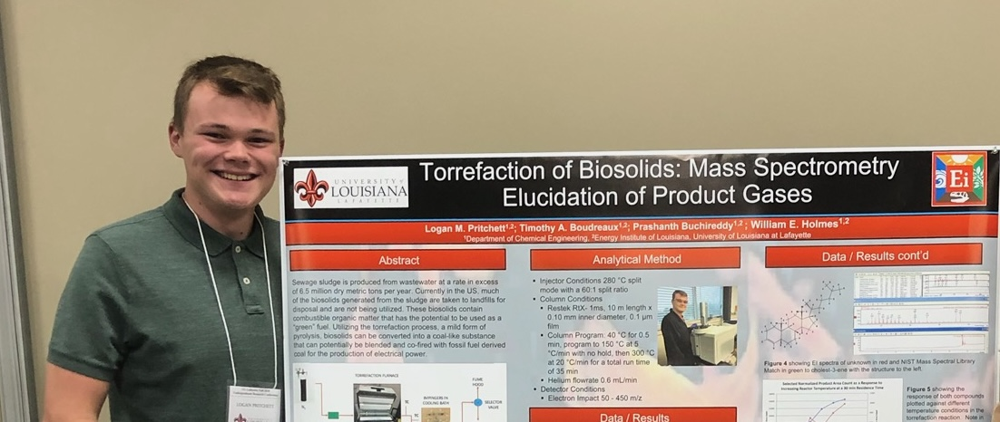

About Me

Hi, I'm Logan, a passionate full-stack JavaScript developer based in Lafayette, Louisiana. My
journey began as a chemical engineering student at UL Lafayette, but everything changed when I discovered my
true calling in software development. I thrive on solving complex problems through code and building
innovative solutions. Beyond programming, I'm an avid learner - I'm currently studying
Spanish and German, starting side hustles, as well as continuing to expand my knowledge of web development.
My tech stack includes JavaScript, React, Node.js, Express, PostgreSQL and Knex. I'm currently diving deeper
into TypeScript and Python.
Projects
A restaurant reservation system designed to manage reservations and table
assignments for fine dining restaurants.
View
on GitHub
A movie database application designed to help users discover movies, read
detailed reviews, and find local theater showtimes.
View on
GitHub
An application designed to enhance your study sessions. Create, edit, and manage
your decks, and tailor your learning experience with custom flashcards.
View on GitHub
A digital hub for managing and tracking community library resources with a focus
on streamlining the borrowing process and providing insights into account activity.
View on GitHub
The Recipe Tracker application is a digital solution to misplaced and cluttered
recipes.
View on
GitHub
A mock vacation rental website inspired by platforms like Airbnb and OkCupid.
View on
GitHub
A user-friendly tool designed to encode and decode messages using various
ciphers.
View on
GitHub
Work Experience
Software Engineer Trainee Chegg Skills
Oct 2023 - Oct 2024
Responsibilities
- Acquired comprehensive knowledge of industry best practices and software development standards, focusing
on JavaScript, HTML5, CSS3, React Native, Node.js, PostgreSQL, RESTful APIs, algorithms, and data
structures.
- Produced professional projects from concept to completion.
Control Systems Engineering Intern Valero St. Charles Refinery
May 2021 - Aug 2021
Responsibilities
- Identified and mitigated 1,300 critical alarm rationalization issues in 75,000 DCS function blocks,
preventing unintended activation of discrete logic systems.
- Developed and implemented DCS graphics updates, including pH linearization and speed control for a
renewable diesel facility, optimizing process control.
- Automated refinery-wide alarm audits by creating VBA code to standardize tag name formatting, improving
efficiency and consistency in data management.
Process Engineering Intern Valero Meraux Refinery
May 2020 - Aug 2020
Responsibilities
- Led a multi-phase project improving caustic control in the wastewater treatment plant, coordinating with
multiple departments, and managing change requests (MOCs, RAC, EWR).
- Developed real-time monitoring systems by integrating PI ProcessBook tags with Excel, improving control
and safety measures for fired heaters.
- Automated chemical usage tracking through a detailed spreadsheet, optimizing dosage, cost analysis, and
reporting for refinery-wide chemical management.
Contact Me